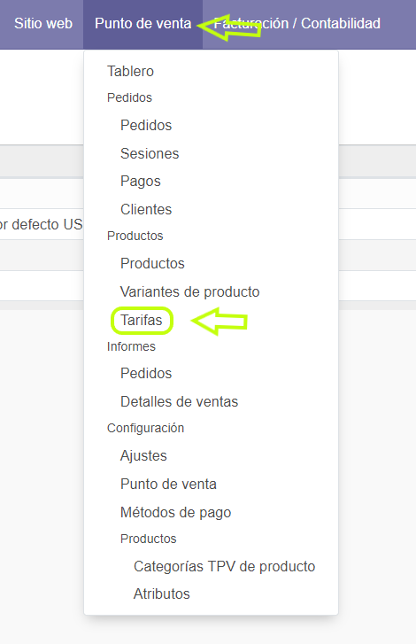
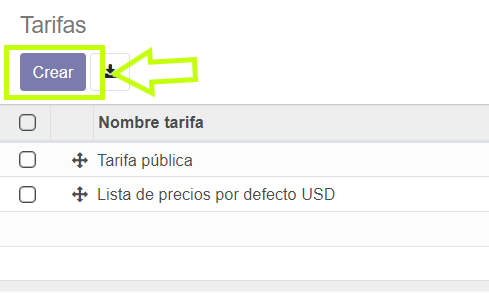
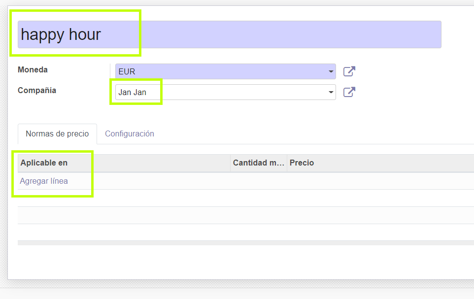
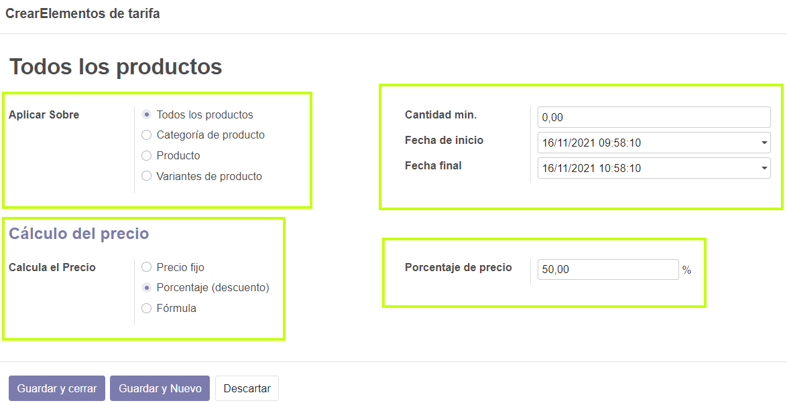

Configurar “happy hour”
Para configurar happy hour manualmente lo primero sera entrar a tarifas dentro de punto de venta

Una vez entremos a tarifas tendremos que crear una nueva

En nombre pondremos happy hour seleccionamos la compañia en este caso Jan jan y clicamos en agregar linea

Aqui tendremos que configurar varios apartados:
-El primero es aplicar sobre todos los productos, y en la parte de la derecha indicaremos el dia y la hora de inicio y final
-En precio pondremos porcentaje y en la parte de la derecha indicaremos el descuento que queremos poner en todos los productos.
-PARA TERMINAR GUARDAMOS
